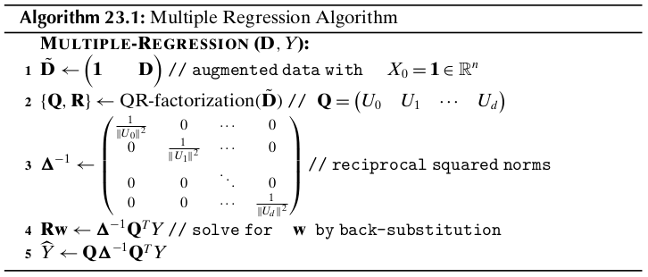
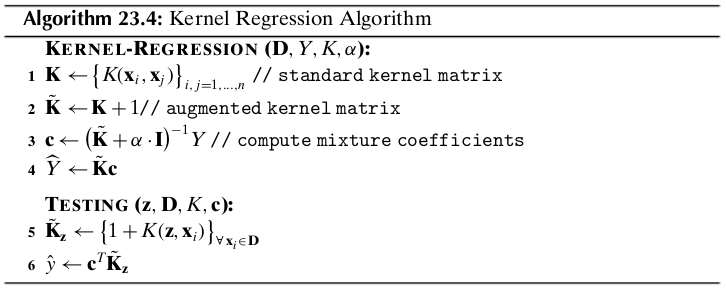

Chapter 23 Linear Regression¶
Given a set of attributes or variables \(X_1,X_2,\cds,X_d\), called the predictor, explanatory, or independent variables, and given a real-valued attribute of interest \(Y\), called the response or dependent variable, the aim of regression is to predict the response variable based on the independent variables. That is, the goal is to learn a regression function \(f\), such that
where \(\X=(X_1,X_2,\cds,X_d)^T\) is the multivariate random variable comprising the predictor attributes, and \(\ve\) is a random error term that is assumed to be independent of \(\X\). In other words, \(Y\) is comrpised of two components, one dependent on the observed predictor attributes, and the other, coming from the error term, independent of the predictor attributes. The error term encapsulates inherent uncertainty in \(Y\), as well as, possibly the effect of unobserved, hidden or latent variables.
23.1 Linear Regression Model¶
In linear regression the function \(f\) is assumed to be linear in its parameters, that is
Note
\(\dp f(\X)=\beta+\omega_1X_1+\omega_2X_2+\cds+\omega_dX_d=\beta+\sum_{i=1}^d\omega_iX_i=\beta+\bs{\omega}^T\X\)
Here, the parameter \(\beta\) is the true (unknown) bias term, the parameter \(\omega_i\) is the true (unknown) regression coefficient or weight for attribute \(X_i\), and \(\bs{\omega}=(\omega_1,\omega_2,\cds,\omega_d)^T\) is the true \(d\)- dimensional weight vector. Observe that \(f\) specifies a hyperplane in \(\R^{d+1}\), where \(\bs{\omega}\) is the weight vector that is normal or orthogonal to the hyperplane, and \(\beta\) is the intercept or offset term. We can see that \(f\) is completely specified by the \(d+1\) parameters comprising \(\beta\) and \(\omega_i\), for \(i=1,\cds,\d\).
The true bias and regression coefficients are unknown. Therefore, we have to estimate them from the training dataset \(\D\) comprising \(n\) points \(\x_i\in\R^d\) in a \(d\)-dimensional space, and the corresponding response values \(y_i\in\R\), for \(i=1,2,\cds,n\). Let \(b\) denote the estimated value for the true bias \(\beta\), and let \(w_i\) denote the estimated value for the true regression coefficient \(w_i\), for \(i=1,2,\cds,d\). Let \(\w=(w_1,w_2,\cds,w_d)^T\) denote the vector of estimated weights. Given the estimated bias and weight values, we can predict the response for any given input or test point \(\x=(x_1,x_2,\cds,x_d)^T\), as follows:
The difference between the observed and predicted response, called the residual error, is given as
The residual error \(\epsilon\) is an estimator of the random error term \(\ve\).
A common approach to predicting the bias and regression coefficients is to use the method of least squares. That is, given the training data \(\D\) with points \(\x_i\) and response values \(y_i\) (for \(i=1,\cds,n\)), we seek values \(b\) and \(\w\), so as to minimize the sum of squared residual errors (SSE)
Note
\(\dp SSE=\sum_{i=1}^n\epsilon_i^2=\sum_{i=1}^n(y_i-\hat{y_i})^2=\sum_{i=1}^n(y_i-b-\w^T\x_i)^2\)
23.2 Bivariate Regression¶
Let us first consider the case where the input data \(\D\) comprises a single predictor attribute, \(W=(x_1,x_2,\cds,x_n)^T\), along with the response variable, \(Y=(y_1,y_2,\cds,y_n)^T\). Since \(f\) is linear, we have
Note
\(\hat{y_i}=f(x_i)=b+w\cd x_i\)
Thus, we seek the straight line \(f(x)\) with slope \(w\) and intercept \(b\) that best fits the data. The residual error, which is the difference between the predicted value (also called fitted value) and the observed value of the response variable, is given as
Note that \(|\epsilon_i|\) denotes the vertical distance between the fitted and observed response. The best fitting line minimizes the sum of squared errors
Note
\(\dp\min_{b,w}SSE=\sum_{i=1}^n\epsilon_i^2=\sum_{i=1}^n(y_i-\hat{y_i})^2=\sum_{i=1}^n(y_i-b-w\cd x_i)^2\)
Note
\(b=\mu_Y-w\cd\mu_X\)
where \(\mu_Y\) is the sample mean for the response and \(\mu_X\) is the sample mean for the predictor attribute.
Note
\(\dp w=\frac{\sum_{i=1}^n(x_i-\mu_X)(y_i-\mu_Y)}{\sum_{i=1}^n(x_i-\mu_X)^2}=\) \(\dp\frac{\sg_{XY}}{\sg_X^2}=\frac{\rm{cov}(X,Y)}{\rm{var}(X)}\)
where \(\sg_X^2\) is the variance of \(X\) and \(\sg_{XY}\) is the covariance between \(X\) and \(Y\). Noting that the correlation between \(X\) and \(Y\) is given as \(\rho_{XY}=\frac{\sg_{XY}}{\sg_X\cd\sg_Y}\), we can also write \(w\) as
Thus, the point \((\mu_X,\mu_Y)\) lins on the regression line.
23.2.1 Geometry of Bivariate Regression¶
Let \(X=(x_1,x_2,\cds,x_n)^T\) be the \(n\)-dimensional vector denoting the training data sample, \(Y=(y_1,y_2,\cds,y_n)^T\) the sample vector for the response variable, and \(\hat{Y}=(\hat{y_1},\hat{y_2},\cds,\hat{y_n})^T\) the vector of predicted values, then we can express the \(n\) equations, \(y_i=b+w\cd x_i\) for \(i=1,2,\cds,n\), as a single vector equation:
This equation indicates that the predicted vector \(\hat{Y}\) is a linear combination of \(\1\) and \(X\), i.e., it must lie in the column space spanned by \(\1\) and \(X\), given as \(\rm{span}(\{\1,X\})\). On the other hand, the response vector \(Y\) will not usually lie in the same column space. In fact, the residual error vector \(\bs{\epsilon}=(\epsilon_1,\epsilon_2,\cds,\epsilon_n)^T\) captures the deviation between the response and predicted vectors
The geometry of the problem makes it clear that the optimal \(\hat{Y}\) that minimizes the error is the orthogonal projection of \(Y\) onto the subspace spanned by \(\1\) and \(X\). The residual error vector \(\bs{\epsilon}\) is thus orthogonal to the subspace spanned by \(\1\) and \(X\), and its squared length (or magnitude) equals the SSE value, Since
Even though \(\1\) and \(X\) are linearly independent and form a basis for the column space, they need not be orthogonal. We can create an orthogonal basis by decomposing \(X\) into a component along \(\1\) and a component orthogonal to \(\1\).
where \(\bar{X}=X-\mu_X\cd\1\) is the centered attribute vector, obtained by subtracting the mean \(\mu_X\) from all points.
The two vectors \(\1\) and \(\bar{X}\) form an orthogonal basis for the subspace. We can thus obtain the predicted vector \(\bar{Y}\) by projecting \(Y\) onto \(\1\) and \(\bar{X}\), and summing up these two components. That is,
Since both are expressions for \(\hat{Y}\), we can equate them to obtain
22.3 Multiple Regression¶
We now consider the more general case called multiple regression where we have multiple predictor attributes \(X_1,X_2,\cds,X_d\) and a single response attribute \(Y\). The training data sample \(\D\in\R^{n\times d}\) comprises \(n\) points \(\x_i=(x_{i1},x_{i2},\cds,x_{id})^T\) in a \(d\)-dimensional space, along with the corresponding observed response value \(y_i\). The vector \(Y=(y_1,y_2,\cds,y_n)^T\) denotes the observed response vector. The predicted response value for input \(\x_i\) is given as
where \(\w=(w_1,w_2,\cds,w_d)^T\) is the weight vector comprising the regression coefficients or weights \(w_j\) along each attribute \(X_j\).
Instead of dealing with the bias \(b\) separately from the weights \(w_i\) for each attribute, we can introduce a new “constant” valued attribute \(X_0\) whose value is always fixed at 1, so that each input point \(\x_i=(x_{i1},x_{i2},\cds,x_{id})^T\in\R^d\) is mapped to an augmented point \(\td{\x_i}=(x_{i0},x_{i1},x_{i2},\cds,x_{id})^T\in\R^{d+1}\), where \(x_{i0}=1\). Likewise, the weight vector \(\w=(w_1,w_2,\cds,w_d)^T\) is mapped to an augmented weight vector \(\td{\w}=(w_0,w_1,w_2,\cds,w_d)^T\), where \(w_0=b\). The predicted response value for an augmented \((d+1)\) dimensional point \(\td{\x_i}\) can be written as
Note
\(\hat{y_i}=w_0x_{i0}+w_1x_{i1}+w_2x_{i2}+\cds+w_dx_{id}=\td{\w}^T\td{\x_i}\)
We can compactly write all thes \(n\) equations as a single matrix equation, given as
where \(\td{\D}\in\R^{n\times(d+1})\) is the augmented data matrix, which includes the constant attribute \(X_0\) in addition to the predictor attributes \(X_1,X_2,\cds,X_d\), and \(\hat{Y}=(\hat{y_1},\hat{y_2},\cds,\hat{y_n})^T\) is the vector of predicted responses.
The multiple regression task can now be stated as finding the best fitting hyperplane defined by the weight vector \(\td{\w}\) that minimizes the sum of squared errors
Note
\(\td\w=(\td\D^T\td\D)\im\td\D^TY\)
23.3.1 Geometry of Multiple Regression¶
Let \(\td\D\) be the augmented data matrix comprising the \(d\) independent attributes \(X_i\), along with the new constant attribute \(X_0=\1\in\R^n\), given as
Let \(\td\w=(w_0,w_1,\cds,w_d)^T\in\R^(d+1)\) be the augmented weight vector that incorporates the bias term \(b=w_0\).
This euqation makes it clear that the predicted vector must lie in the column space of the augmented data matrix \(\td\D\), denoted \(col(\td\D)\), i.e., it must be a linear combination of the attribute vectors \(X_i\), \(i=0,\cds,d\).
To minimize the error in prediction, \(\hat{Y}\) must be the orthogonal projection of \(Y\) onto the subspace \(col(\td\D)\). The residual error vector \(\bs\epsilon=Y-\hat{Y}\) is thus orthogonal to the subspace \(col(\td\D)\), which means that it is orthogonal to each attribute vector \(X_i\).
We thus have \((d+1)\) equations, called the normal equations, in \((d+1)\) unknowns, namely the regression coefficients or weights \(w_i\) (including the bias term \(w_0\)).
More insight can be obtained by noting that the attribute vectors comprising the column space of \(\td\D\) are not necessarily orthogonal, even if we assume they are linearly independent. To obtain the projected vector \(\hat{Y}\), we first need to construct an orthogonal basis for \(col(\td\D)\).
Let \(U_0,U_1,\cds,U_d\) denote the set of orthogonal basis vectors for \(col(\td\D)\). We construct these vectors in a step-wise manner via Gram-Schmidt orthogonalization, as follows
where
denotes the scalar projection of attribute \(X_j\) onto the basis vector \(U_i\).
Rearranging the equations above, we get
The Gram-Schmidt method thus results in the so-called QR-factorization of the data matrix, namely \(\td\D=\bs{\rm{Q}}\bs{\rm{R}}\), where by construction \(\bs{\rm{Q}}\) is an \(n\times(d+1)\) matrix with orthogonal columns
and \(\bs{\rm{R}}\) is the \((d+1)\times(d+1)\) upper-triangular matrix
Bias Term
Defien \(\bar{X_i}\) to be the centered attribute vector
On the other hand, since \(\1\) is orthogonal to all \(\bar{X_i}\), we can obtain another expression for \(\bar{Y}\) in terms of the projection of \(Y\) onto the subspace spanned by the vectors \(\{\1,\bar{X_1},\cds,\bar{X_d}\}\). Let the new orthogonal basis for these centered attribute vectors be \(\{\bar{U_0},\bar{U_1},\cds,\bar{U_d}\}\), where \(\bar{U_0}=\1\). Thus, \(\hat{Y}\) can also be written as
23.3.2 Multiple Regression Algorithm¶
23.3.3 Multiple Regression: Stochastic Gradient Descent¶
Consider the SSE obejective
The gradient of the SSE objective is given as
Using gradient descent, starting from an initial weight vector estimate \(\td\w^0\), we can iteratively update \(\td\w\) as follows
In stochastic gradient descent (SGD), we update the weight vector by considering only one (random) point at each time. Restricting to a single point \(\td\x_k\) in the training data \(\td\D\), the gradient at the point \(\td\x_k\) is given as
Therefore, the stochastic gradient update rule is given as
23.4 Ridge Regression¶
Instead of trying to simply minimize the squared residual error \(\lv Y-\hat{Y}\rv^2\), we add a regularization term involving the squared norm of the weight vector \((\lv\w\rv^2)\) as follows:
Note
\(\min_{\td\w}J(\td\w)=\lv Y-\hat{Y}\rv^2+\alpha\cd\lv\td\w\rv^2=\lv Y-\td\D\td\w\rv^2+\alpha\cd\lv\td\w\rv^2\)
Here \(\alpha\geq 0\) is a regularization constant that controls the tradeoff between minimizing the squared norm of the weight vector and the squared error. Recall that \(\lv\td\w\rv^2=\sum_{i=1}^dw_i^2\) is the \(L_2\)tdw`. For this reason ridge regression is also called \(L_2\) regularized regression. When \(\alpha=0\), there is no regularization, but as \(\alpha\) increases there is more emphasis on minimizing the regression coefficients.
Therefore, the optimal solution is
Regularized regression is also called ridge regression since we add a “ridge” along the main diagonal of the \(\td\D^T\td\D\) matrix, i.e., the optimal solution depends on the regularized matrix \((\td\D^T\td\D+\alpha\cd\I)\). Another advantage of regularization is that if we choose a small positive \(\alpha\) we are always guaranteed a solution.
Unpenalized Bias Term
To avoid panalizing the bias term, consider the new regulalrized objective with \(\w=(w_1,w_2,\cds,w_d)^T\), and without \(w_0\) given as
Note
\(\dp\min_\w J(\w)=\lv\bar{Y}-\bar\D\bar\w\rv^2+\alpha\cd\lv\w\rv^2\)
where \(\bar{Y}=Y-\mu_Y\cd\1\) is the centered response vector, and \(\bar\D=\D-\1\mmu^T\) is the centered data matrix. In other words, we can exclude \(w_0\) from the \(L_2\) regularization obejctive by simply centering the response vector and the unaugmented data matrix.
23.4.1 Ridge Regression: Stochastic Gradient Descent¶
Using (batch) gradient descent, we can iteratively compute \(\td\w\) as follows
In stochastic gradient descent (SGD), we update the weight vector by considering only one (random) point at each time. The gradient at the point \(\td{\x_k}\) is given as
Here, we scale the regularization constant \(\alpha\) by dividing it by \(n\), the number of points in the training data, since the original ridge value \(\alpha\) is for all the \(n\) points, whereas we are now considering only one point at a time.
23.5 Kernel Regression¶
To avoid explicitly dealing with the bias term, we add the fixed value 1 as the first element of \(\phi(\x_i)\) to obtain the augmented transformed point \(\td\phi(\x_i)^T=\bp 1&\phi(\x_i)^T\ep\). Let \(\td{\D_\phi}\) denote the augmented dataset in feature space, comprising the transformed points \(\td\phi(\x_i)\) for \(i=1,2,\cds,n\). The augmented kernel function in feature space is given as
Let \(Y\) denote the observed response vector. We model the predicted response as
where \(\td\w\) is the augmented weight vector in feature space. The first element of \(\td\w\) denotes the bias in feature space.
For regularized regression, we have to solve the following objective in feature space:
Note
\(\dp\min_{\td\w}J(\td\w)=\lv Y-\hat{Y}\rv^2+\alpha\cd\lv\td\w\rv^2=\) \(\lv Y-\td{\D_\phi}\td\w\rv^2+\alpha\cd\lv\td\w\rv^2\)
where \(\alpha\geq 0\) is the regularization constant.
where \(\c=(c_1,c_2,\cds,c_n)^T=\frac{1}{\alpha}(Y-\td{\D_\phi}\td\w)\)
Note
\(\c=(\td\K+\alpha\cd\I)\im Y\)
where \(\td\K(\td\K+\alpha\cd\I)\im\) is the kernel hat matrix.
23.6 \(L_1\) Regression: Lasso¶
The Lasso, which stands for least absolute selection and shrinkage operator, is a regularization method that aims to sparsify the regression weights. Instead of using the \(L_2\) or Euclidean norm for weight regularization as in ridge regression, the Lasso formulation uses the \(L_1\) norm for regularization
Note
\(\dp\min_\w J(\w)=\frac{1}{2}\cd\lv\bar{Y}-\bar\D\w\rv^2+\alpha\cd\lv\w\rv_1\)
where \(\alpha\geq 0\) is the regularization constant and
We asume that
One benefit of centering is that we do not have to explicitly deal with the bias term \(b=w_0\), which is important since we usually do not want to penalize \(b\). Once the regression coefficients have been estimated, we can obtain the bias term as follows:
The main advantage of using the \(L_1\) norm is that it leads to sparsity in the solution vector. That is, whereas ridge regression reduces the value of the regression coefficients \(w_i\), they may remains small but still non-zero. On the other hand, \(L_1\) regression can drive the coefficients to zero, resulting in a more interpretable model, especially when there are many predictor attributes.
The Lasso objective comprises two parts, the squared error term \(\lv\bar{Y}-\bar\D\w\rv^2\) which is convex and differentiable, and the \(L_1\) penalty term \(\alpha\cd\lv\w\rv_1=\alpha\sum_{i=1}^d|w_i|\), which is convex but unfortunately non-differentiable at \(w_i=0\). This means we cannot simply compute the gradient and set it to zero, as we did in the case of ridge regression. However, these kinds of problems can be colved via the generalized approach of subgradients.
23.6.1 Subgradients and Subdifferential¶
Consider the absolute value function \(f:\R\rightarrow\R\)
When \(w>0\), we can see that its derivative is \(f\pr(w)=+1\), and when \(w<0\), its derivative is \(f\pr(w)=-1\). On the other hand, there is a discontinuity at \(w=0\) where the derivative does not exist.
We use the concept of a subgradient that generalizes the notion of a derivative. For the absolute value function, the slope \(m\) of any line that passes through \(w=0\) that remains below or touches the graph of \(f\) is called a subgradient of \(f\) at \(w=0\). The set of all the subgradients at \(w\) is called the subdifferential, denoted as \(\pd|w|\). Thus, the subdifferential at \(w=0\) is given as
since only lines with slope between \(-1\) and \(+1\) remain below or (partially) coincide with the absolute value graph.
Considering all the cases, the subdifferential for the absolute value function is given as
We can see that when the derivative exists, the subdifferential is unique and corresponds to the derivative (or gradient), and when the derivative does not exist the subdifferential corresponds to a set of subgradients.
23.6.2 Bivariate \(L_1\) Regression¶
The bivariate regression model is given as
The Lasso objective can then be written as
Note
\(\dp\min_wJ(w)=\frac{1}{2}\sum_{i=1}^n(\bar{y_i}-w\cd\bar{x_i})^2+\alpha\cd|w|\)
where \(\eta=1/\lv\bar{X}\rv^2>0\) is a scaling constant.
Case I (\(w>0\) and \(\pd|w|=1\)):
\[w=\eta\cd\bar{X}^T\bar{Y}-\eta\cd\alpha\]Since \(w>0\), this implies \(\eta\cd\bar{X}^T\bar{Y}>\eta\cd\alpha\) or \(|\eta\cd\bar{X}^T\bar{Y}>\eta\cd\alpha\).
Case II (\(w<0\) and \(\pd|w|=-1\)):
\[w=\eta\cd\bar{X}^T\bar{Y}+\eta\cd\alpha\]Since \(w<0\), this implies \(\eta\cd\bar{X}^T\bar{Y}<-\eta\cd\alpha\) or \(|\eta\cd\bar{X}^T\bar{Y}|>\eta\cd\alpha\).
Case III (\(w=0\) and \(\pd|w|\in[-1,1]\)):
\[w\in[\eta\cd\bar{X}^T\bar{Y}-\eta\cd\alpha,\eta\cd\bar{X}^T\bar{Y}+\eta\cd\alpha]\]However, since \(w=0\), this implies \(\eta\cd\bar{X}^T\bar{Y}-\eta\cd\alpha\leq 0\) and \(\eta\cd\bar{X}^T\bar{Y}+\eta\cd\alpha\geq 0\). In other words, \(\eta\cd\bar{X}^T\bar{Y}\leq\eta\cd\alpha\) and \(\eta\cd\bar{X}^T\bar{Y}\geq-\eta\cd\alpha\). Therefore, \(|\eta\cd\bar{X}^T\bar{Y}|\leq\eta\cd\alpha\).
Let \(\tau\geq 0\) be some fixed value. Define the soft-threshold function \(S_\tau:\R\rightarrow\R\) as follows:
The the above three cases can be written compactly as:
Note
\(w=S_{\eta\cd\alpha}(\eta\cd\bar{X}^T\bar{Y})\)
with \(\tau=\eta\cd\alpha\), where \(w\) is the optimal solution to the bivariate \(L_1\) regression problem.
23.6.3 Multiple \(L_1\) Regression¶
Consider the \(L_1\) regression objective
We generalize the bivariate solution to the multiple \(L_1\) formulation by optimizing for each \(w_k\) individually, via the approach of cyclical coordinate descent. We rewrite the \(L_1\) objective by focusing only on the \(w_k\) terms, and ignoring all terms not involving \(w_k\), which are assumed to be fixed:
The new estimate for \(w_k\) at step \(t+1\) is then given as
where \(\eta=1/\lv\bar{X_k}\rv^2>0\) is just a scaling constant.
Note
\(w_k^{t+1}=S_{\eta\cd\alpha}(w_k^t+\eta\cd\bar{X_k}^T(\bar{Y}-\bar\D\w^t))\)